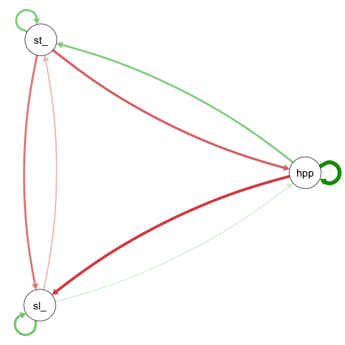

Mixed-family VAR
bvarnet allows combining different outcome families in a
single VAR model by passing a named vector to the family
argument. This is useful when the variables in the network are measured
on different scales.
In this example we fit a mixed-family VAR(1) with three types of outcome:
-
ordinal:
stress_level(5-point Likert items) -
binary:
happyornot_bin(binarised daily average) -
gaussian:
sleep_duration(hours)
Load Data
Again, we start with loading the data
data(studentlife)Priors
For a mixed-family model we specify priors for all parameter types
that can appear. Here that means we need to specify priors for the
following parameters: intercept, phi
(temporal), beta (fixed effects), kappa
(ordinal thresholds), and sigma (gaussian residual SD).
Estimation
We pass a named character vector to family so that each
outcome gets the appropriate likelihood.
fit_mixed <- bvar(
id_col = "id",
time_col = "day",
y_cols = c("stress_level", "happyornot", "sleep_duration"),
x_cols = NULL,
re_cols = NULL,
re_temporal = FALSE,
K = 1,
data = studentlife,
family = c(stress_level = "ordinal",
happyornot = "bernoulli",
sleep_duration = "gaussian"),
priors = priors,
iter = 4000,
warmup = 2000,
chains = 4,
cores = 4,
seed = 1337
)Results
print(fit_mixed)
#> BVAR Network fit
#> ========================================
#> Family: mixed (stress_level=ordinal, happyornot=bernoulli, sleep_duration=gaussian)
#> Outcomes (p): 3
#> Lags (K): 1
#> Fixed eff.: 1
#> Observations: 87
#> Rhat max: 1.001
#> Divergences: 1 WARNING: check model/priors.
#> Priors:
#> intercept ~ Normal(0, 1)
#> beta ~ Normal(0, 1)
#> phi ~ Normal(0, 0.5)
#> sigma ~ Half-Normal(0, 1)
#> kappa ~ Normal(0, 1)
#> Total time: 1.2 sec
#> ========================================
summary(fit_mixed)
#> BVAR Network Summary
#> ==================================================
#> Family: mixed (stress_level=ordinal, happyornot=bernoulli, sleep_duration=gaussian) | p=3 | K=1 | n=87
#> Rhat max: 1.001 | Divergences: 1
#> WARNING: divergent transitions detected — check model/priors.
#>
#> --- Intercept ---
#> predictor outcome mean median q5 q95 rhat ess_bulk ess_tail
#> Intercept happyornot -1.167 -1.160 -1.734 -0.626 1 11176.10 9116.660
#> Intercept sleep_duration 5.644 5.648 5.297 5.986 1 12937.83 9771.961
#>
#>
#> --- Autoregressive ---
#> predictor outcome mean median q5 q95 rhat ess_bulk ess_tail
#> lag1_stress_level stress_level 0.196 0.194 0.033 0.367 1 8462.812 8610.870
#> lag1_happyornot happyornot 0.441 0.440 -0.257 1.136 1 12339.308 9618.399
#> lag1_sleep_duration sleep_duration 0.226 0.225 0.108 0.345 1 10963.284 9073.396
#>
#>
#> --- Cross-lagged ---
#> predictor outcome mean median q5 q95 rhat ess_bulk ess_tail
#> lag1_happyornot stress_level 0.188 0.192 -0.258 0.627 1.000 11502.547 9541.818
#> lag1_sleep_duration stress_level -0.104 -0.102 -0.189 -0.023 1.000 7852.874 8120.769
#> lag1_stress_level happyornot -0.234 -0.230 -0.650 0.175 1.000 9856.815 9572.424
#> lag1_sleep_duration happyornot 0.067 0.067 -0.120 0.248 1.000 9073.367 9094.861
#> lag1_stress_level sleep_duration -0.198 -0.199 -0.453 0.053 1.000 11200.448 9478.212
#> lag1_happyornot sleep_duration -0.292 -0.297 -0.868 0.285 1.001 13926.942 10143.977
#>
#>
#> --- Residual SD ---
#> predictor outcome mean median q5 q95 rhat ess_bulk ess_tail
#> sleep_duration sigma 1.418 1.411 1.249 1.61 1 13626.98 10426.3
#>
#>
#> --- Threshold ---
#> predictor outcome mean median q5 q95 rhat ess_bulk ess_tail
#> kappa(stress_level, c1) — -0.085 -0.067 -0.458 0.232 1.000 5995.39 4848.848
#> kappa(stress_level, c2) — 0.243 0.243 -0.034 0.515 1.000 15220.91 12517.771
#> kappa(stress_level, c3) — 0.484 0.476 0.192 0.803 1.000 15744.65 13041.185
#> kappa(stress_level, c4) — 0.992 0.955 0.505 1.606 1.001 11753.41 11016.804
#>
#>
#> ==================================================
#> Use extract_param() or extract_param(fit, type = "...") for the full parameter table.
#> Use extract_network_matrix() for the temporal network matrix.The temporal network can be extracted and inspected as usual:
nw_mat <- extract_network_matrix(fit_mixed)
qgraph(nw_mat)
As every other model, the mixed model can be extended by random
effects (Vignette(Random-Effects)), hypothesis tests can be
performed (Vignette(Hypothesis-Testing)).